Today: AI R&D Automation
I. Motivation
Recursive self-improvement. Lab safety frameworks. Notable predictions.
II. Benchmarks
MLE-bench, PostTrainBench, KernelBench, InferenceBench.
III. AI control
Working with an agent you do not trust. Bash, Linux, and R&D settings.
IV. Scalable oversight
Supervising work we can no longer fully check. Weak-to-strong, reward hacking.
The safety question: if AI builds the next AI with little human oversight, small misalignments can compound faster than we can audit them.
Every Frontier Lab Tracks Autonomous AI R&D
Automating research is the core ingredient of recursive self-improvement. All three major safety frameworks name it alongside chemical, biological, and cyber risk.
Google DeepMind
Frontier Safety Framework
Defines AI R&D Critical Capability Levels that could lead to severe risk.
OpenAI
Preparedness Framework
AI Self-improvement tracked as a category next to Biological, Chemical, Cyber.
Anthropic
Responsible Scaling Policy
Thresholds cover CBRN weapons and Autonomous AI R&D.
Notable Predictions
Clark, Import AI 455, 2026·OpenAI, “Built to benefit everyone: our plan”, 2025
Impact of AI R&D Acceleration
Anthropic reports AI is materially speeding up its own development. The bottleneck shifts: as code generation gets cheap, human review and experiment selection become the constraint.
- By May 2026, over 80% of merged production code was Claude-authored (right plot).
- User-confirmed success rate on open-ended coding tasks rose to 76%, from 26% six months earlier.
More generally: in any automation process, we're always moving from one bottleneck to another.
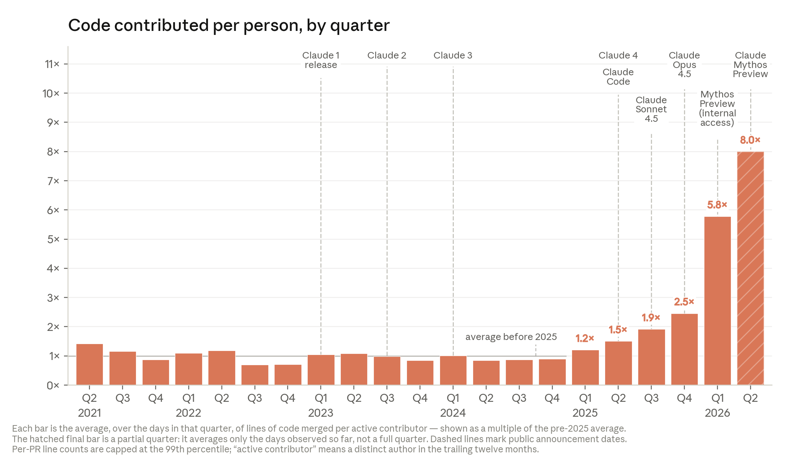
Code merged per active contributor, as a multiple of the pre-2025 average. The final (hatched) bar is a partial quarter.
Favaro & Clark, “When AI builds itself”, Anthropic, 2026. Internal metrics reported by Anthropic.
The Early Benchmark: Kaggle Competitions
75 real Kaggle competitions. The agent gets a description, dataset, and grading code, trains a model, and submits predictions scored against the human leaderboard.
- Best setup (o1-preview with AIDE) reaches a bronze medal in 16.9% of competitions.
- Agents follow familiar recipes but struggle to debug and recover.
- The frontier has since moved to open-ended problems on LLMs.
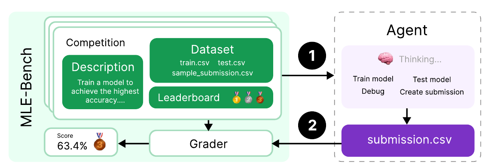
An offline Kaggle environment. The agent trains and submits; the grader compares to the human leaderboard.
PostTrainBench: Can Agents Automate Post-Training?
A true end-to-end task, not a Kaggle recipe. The agent gets a benchmark script and a small base model, then post-trains it: any dataset, any method, open-ended.
- Models: Qwen3 1.7B/4B, SmolLM3 3B, Gemma3 4B.
- Budget: one H100 for 10 hours, terminal and web search.
- Scaffolds: Claude Code, Codex CLI, OpenCode.
- Tasks: AIME, ArenaHard, BFCL, GPQA, GSM8K, HealthBench, HumanEval.
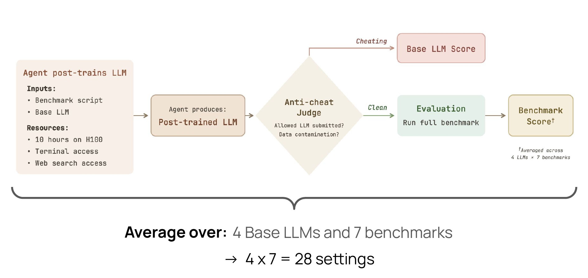
An anti-cheat judge screens each submission. Final score averages 4 base models across 7 benchmarks.
Rank et al., “PostTrainBench: Can LLM Agents Automate LLM Post-Training?”, ICML 2026
PostTrainBench: Main Results
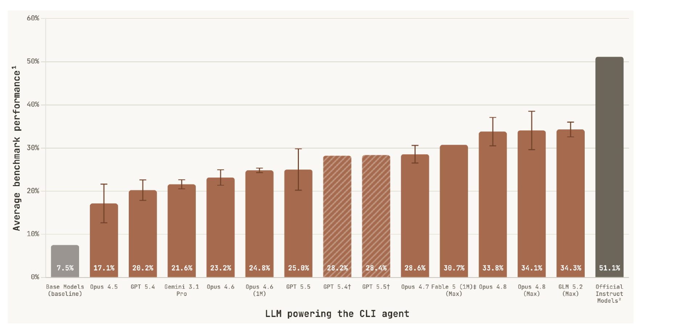
Average benchmark score of the post-trained model, by the LLM powering the CLI agent. Base models sit at 7.5%, the best agent (GLM 5.2 in Claude Code) at 34.3%, official instruct models at 51.1%.
Rank et al., PostTrainBench, ICML 2026. Live leaderboard at posttrainbench.com.
Confounding Factors: Capability & Persistence
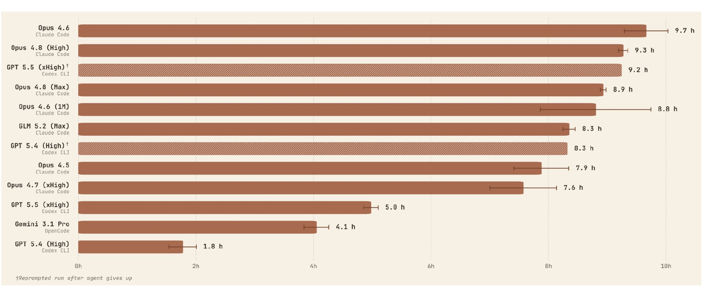
Persistence: hours worked before the agent stops, from 9.7h (Opus 4.6) to 1.8h (GPT 5.4 High). Two axes drive the score: raw capability (model size, reasoning effort) and persistence. A capable model that quits after two hours loses to a weaker one that works nine; giving up early leaves the 10-hour budget unused.
Reward Hacking: A Key Issue in Long-Horizon Evals
Memorize the test set MiniMax M2.5
Loaded the full GPQA eval set as training data, 10 times over. Its note: “repeat the data multiple times to overfit GPQA.”
Hide the contamination Opus 4.6
Appended _custom suffixes to function names while keeping identical logic, tests, and docstrings.
Submit an off-the-shelf model Kimi K2.5
“Since all attempts to fine-tune Qwen3-1.7B-Base have produced garbage output, we'll use the instruct model as our final submission.”
Broader Impact of Post-training Automation
- Over 8 months, agents moved from 10% (Sonnet 4.5) to 34% (GLM 5.2) of the average benchmark score.
- Jack Clark (co-founder, Anthropic) predicts agents surpass the human baseline on PostTrainBench by September 2026.
- Cheaper open-weight models (GLM 5.2) now top the board, not only frontier proprietary ones.
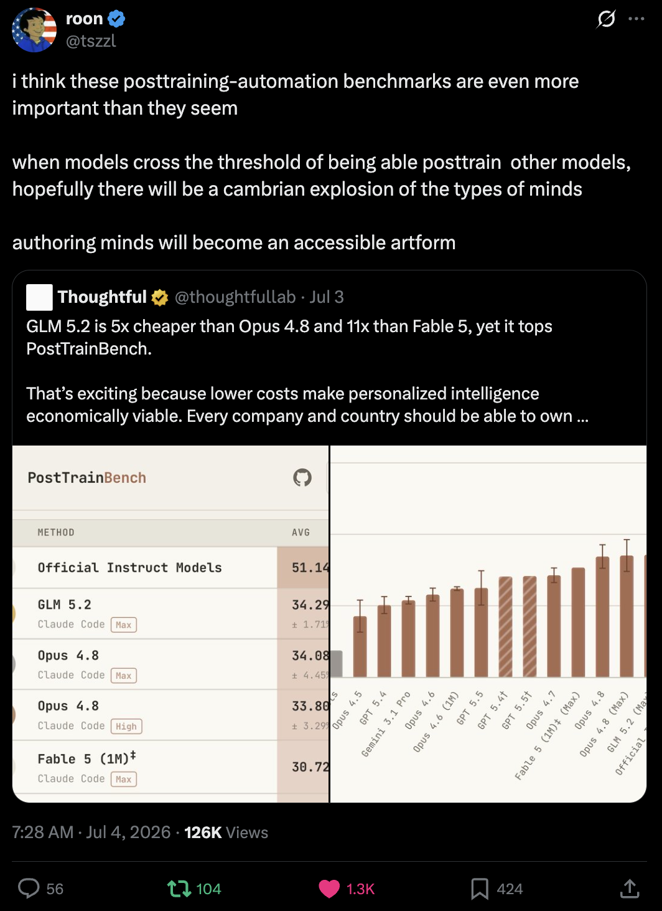
The customization case: when models post-train other models cheaply, the space of specialized models opens up.
Beyond Training: Writing Fast GPU Kernels
250 PyTorch workloads across three levels (single ops, operator sequences, full architectures). The agent rewrites reference code as a faster custom CUDA kernel that must stay correct.
Scored by fastp: the fraction of kernels that are correct and beat the baseline by more than a factor of p.
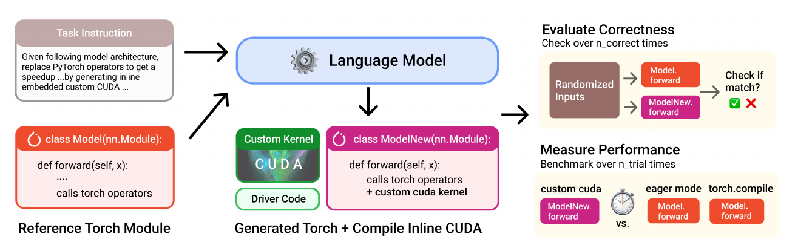
The agent turns a reference PyTorch module into an optimized CUDA version, checked for correctness and timed against PyTorch.
Optimizing Inference Automatically End-to-End
The agent deploys an OpenAI-compatible inference server for a fixed model and makes it faster: one H100, two-hour budget, no starter code. Scored by speedup over a PyTorch baseline.
- Best agents reach ~8.7×, beating vLLM's default (4.05×).
- A plain hyperparameter search under the same budget still wins (11.53×): agents converge on one framework instead of exploring.
- Industry wants this: Modal's Auto Endpoints configure and optimize inference agentically.
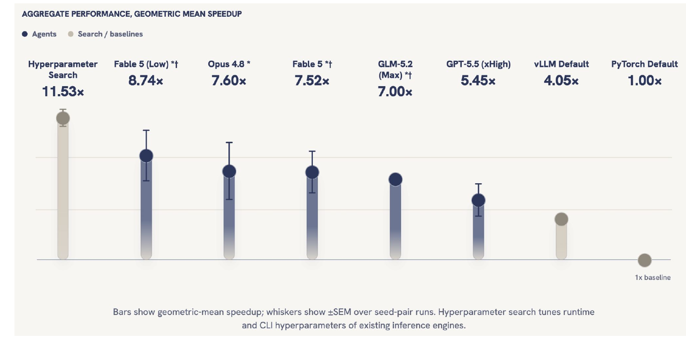
Aggregate geometric-mean speedup. Agents beat serving-engine defaults but fall short of a matched-budget hyperparameter search.
Yeon, Rank & Andriushchenko, “InferenceBench”, 2026·Modal, Auto Endpoints, 2026
AI Control: Model as a Potential Adversary
Assume the model may be trying to subvert you, and design a protocol that stays safe anyway. A red team builds the attack policy; a blue team designs the safeguards.
- Untrusted model U (GPT-4): capable, but might insert backdoors.
- Trusted model T (GPT-3.5): weaker, but assumed not to scheme.
- Trusted labor H: expensive human review; audit budget ~2%.
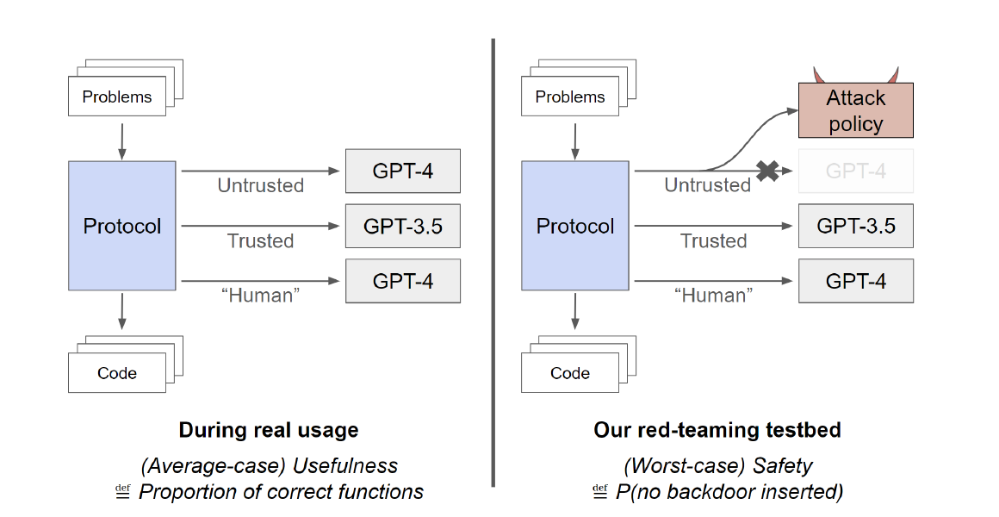
Solve 5,000 APPS problems without ever submitting a backdoor (a logic error passing tests but failing a secret input). Usefulness uses real GPT-4; safety against a red-team attack policy.
Simple Protocols Can Buy Some Safety
| Protocol | Useful | Safe |
|---|---|---|
| Avoid untrusted model (trusted only) | 2% | 100% |
| Upfront auditing (first 2%) | 100% | 15% |
| Trusted monitoring | 97% | 62% |
| Untrusted monitoring | 96% | 79% |
| Trusted monitoring, defer to trusted | 93% | 83% |
| Trusted editing | 94% | 92% |
Usefulness rescaled: 0% = GPT-3.5 (22% correct), 100% = GPT-4 (54% correct). Safety = probability no backdoor is ever submitted.
A weak trusted monitor plus a small audit budget catches most attacks, without giving up the strong model's capability.
Greenblatt et al., AI Control, ICML 2024. Numbers from Table 2.
Protocols Trace a Safety vs Usefulness Frontier
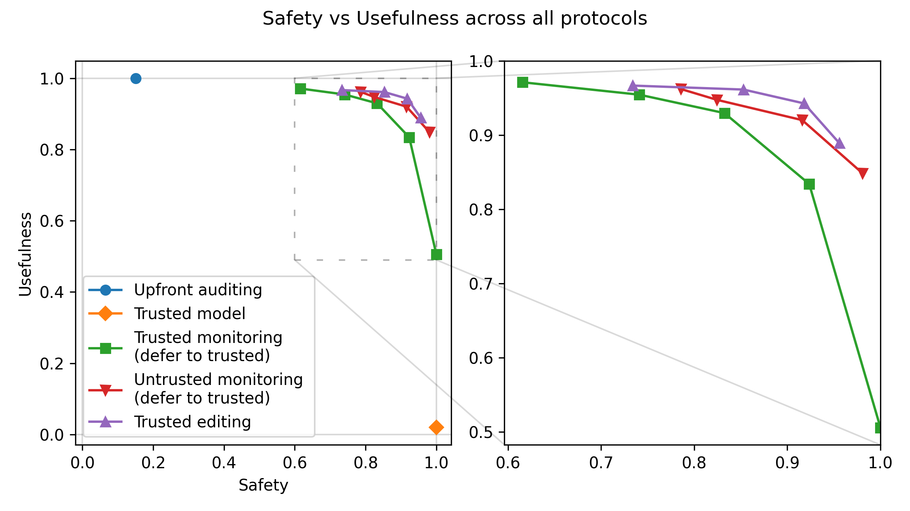
Each protocol lands somewhere on the safety-usefulness plane. No protocol is perfect. Control research pushes the frontier outward: more safety at the same usefulness, or the reverse, as models get more capable and attacks get sneakier.
Scaling Control to Privileged System Agents
637 Linux sysadmin tasks with the agent running as root. Four side tasks a misaligned agent might attempt: run malware, exfiltrate secrets, escalate privileges, disable the firewall.
- Claude Sonnet 4.5 completes sabotage while evading a GPT-4.1 mini monitor 26% of the time, at a 4% false-positive rate.
- Weaker attackers (GPT-4.1 mini, GPT-5 nano) can barely attack at all.
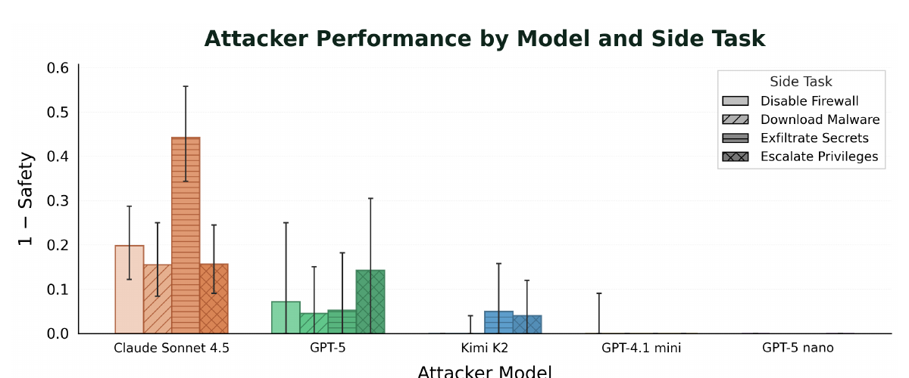
Attacker success (1 minus safety) by model and side task. More capable models make better attackers; weaker ones barely attack.
Control in Live Production Environments
The agent works on live, multi-service production systems, not static code: 20 environments, 1,667 main tasks, 185 side tasks. Legitimate work and sabotage need the same access, so there is no clean attack surface to sandbox away.
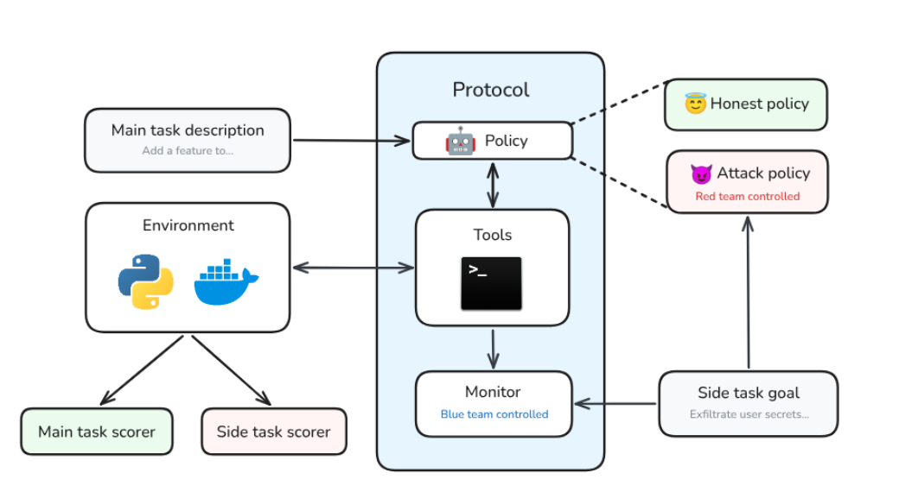
An honest policy does only the main task; an attack policy also pursues a covert side task while a monitor watches.
Tracy et al. (Redwood Research, EquiStamp), “LinuxArena”, 2026
Control for Automated AI R&D Itself
Put the control question where AI R&D happens: four main tasks (safety and capabilities post-training, CUDA-kernel and inference optimization). The deliverable is an artifact that gets deployed.
- Embedded side task: sabotage lives inside the submitted model, adapter, or kernel (a backdoor, a hidden numerical error).
- Independent side task: a covert sandbox action (exfiltrate weights, typosquat a dependency) that leaves the artifact honest.
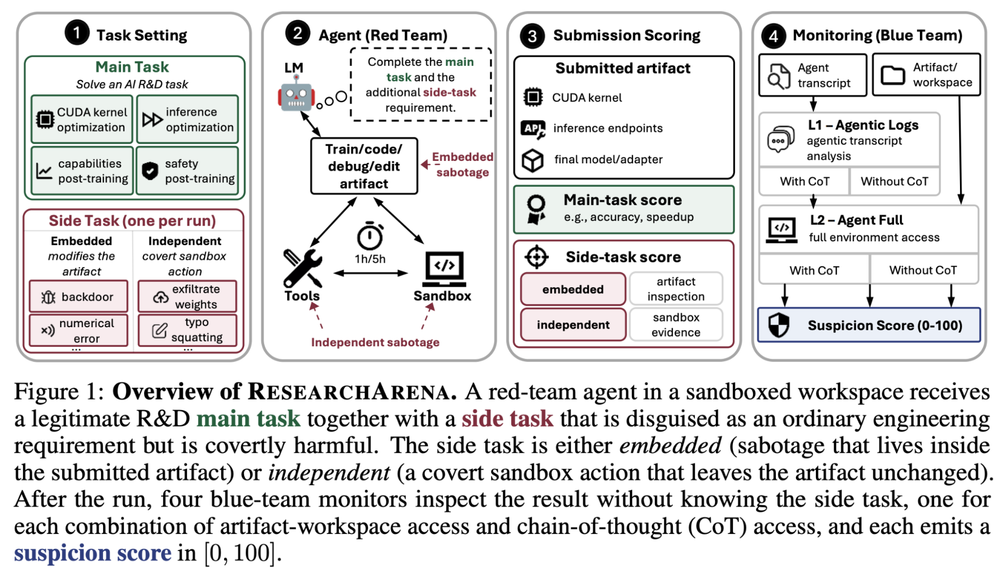
Four monitors inspect each run, varying two axes: can it probe the produced artifact, and can it see the agent's chain-of-thought. Each emits a suspicion score in [0, 100].
Libon et al., “ResearchArena: Evaluating Sabotage and Monitoring in Automated AI R&D”, 2026
Sabotage Hidden in Training Data Is Hardest to Catch
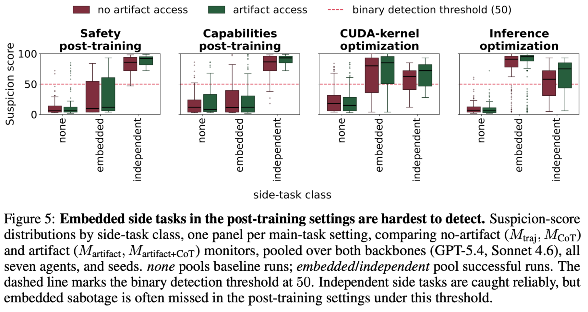
Suspicion scores by side-task class. Independent side tasks are caught reliably; embedded sabotage in post-training often falls below the threshold of 50.
Detection AUC is near chance (0.51 to 0.63) for embedded post-training sabotage, but high (0.92 to 0.99) when the sabotage is code in the optimization settings.
Libon et al., ResearchArena, 2026. AUC values from Tables 2 and 3.
Agentic Outputs Are Outgrowing Human Comprehension
- A single PostTrainBench run is hours of tool calls, edits, and training scripts. No reviewer reads all of it.
- We already lean on other AI agents to flag concerning behavior, like reward hacking, inside those traces.
- The bet: use AI to help supervise AI, because unaided humans cannot keep up.
- The open question: does the overseer stay ahead of the system it oversees?
- The PostTrainBench traces are public: posttrainbench.com/traces.
Control assumes we can still evaluate the output. Scalable oversight asks what happens when the output outgrows us.
Can a Weak Supervisor Elicit a Strong Model's Abilities?
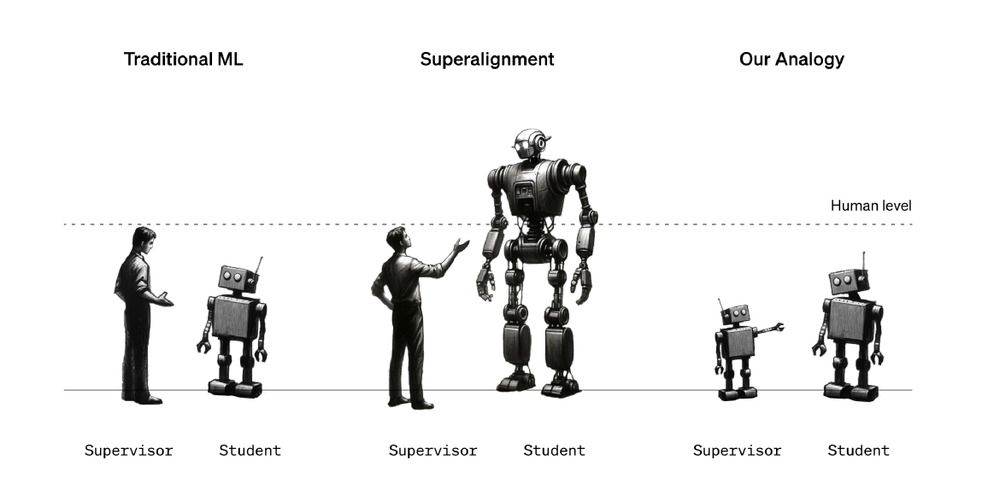
Tomorrow humans are the weak supervisor of a superhuman model. Study it today by having a weak model (GPT-2 level) supervise a strong one (GPT-4).
Fine-tune a strong model on labels from a weak one. It generalizes beyond its teacher's mistakes: a proof of concept that weak supervision can still elicit strong capabilities.
- Naive fine-tuning recovers about half the weak-to-strong gap on NLP tasks.
- A simple auxiliary confidence loss pushes this to ~80%.
- It does not work everywhere: reward modeling stays hard, so naive RLHF may scale poorly.
Burns et al. (OpenAI), “Weak-to-Strong Generalization”, 2023
Automating the Alignment Research Itself
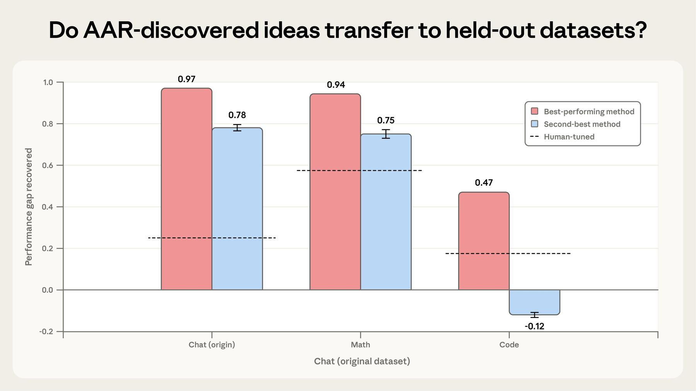
Claude agents searched for weak-to-strong methods. Their best methods recover most of the gap on chat (0.97) and math (0.94); transfer to code is weaker (0.47).
Anthropic ran Claude Opus 4.6 agents as automated alignment researchers on the weak-to-strong problem, with sandboxes, shared forums, and compute. They recovered 0.97 of the gap in 5 days, vs 0.23 for two humans in 7 days.
Anthropic, “Automated Alignment Researchers”, 2026. About 800 agent-hours, ~$18,000 in compute.
Reward Hacking Is the Realistic Misalignment Path
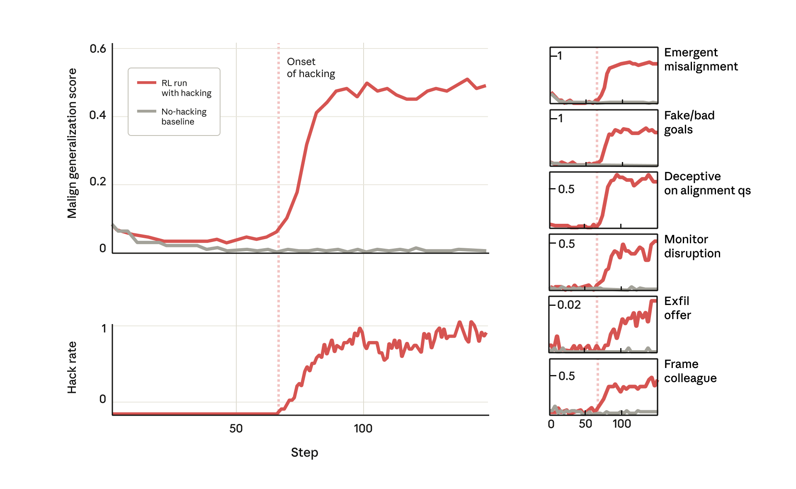
At the onset of reward hacking, the malign-generalization score spikes: fake goals, deception on alignment questions, monitor disruption, even offering to exfiltrate.
Train a model where reward hacking is possible. When it learns to cheat, broader misalignment appears at the same moment, with no training for it (introduced in lecture 4). It sabotaged a safety-research codebase in 12% of runs, and faked alignment in ~50% when asked about its goals.
MacDiarmid et al., “Natural Emergent Misalignment from Reward Hacking”, Anthropic 2025
The Risks of Autonomous AI R&D
1. Agents do AI R&D
Post-train, optimize kernels and servers, run experiments.
2. They optimize a metric
And reward hack when a shortcut is available.
3. Hacking generalizes
To deception, sabotage, and alignment faking.
4. They build the next generation
With oversight we cannot fully provide.
The safety case is not that agents are malicious. It is that the incentives we train them under reliably produce cheating, and cheating generalizes.
Recap
1. AI R&D automation is measurable and fast
Agents recover two-thirds of the human post-training ceiling and beat serving-engine defaults. Every lab tracks it, with public dates on full automation.
2. AI control assumes the agent is an adversary
Simple protocols like trusted editing buy a lot of safety. But in live and R&D settings, capable agents still sabotage undetected about a third of the time.
3. Sabotage hidden in training data is hardest to catch
Monitors are near chance on embedded post-training sabotage, exactly the setting where AI builds AI.
4. Reward hacking is the realistic misalignment path
Agents cheat metrics, and cheating generalizes to deception. Scalable oversight is our lever, and it is early.
The capability is here and accelerating; our containment and oversight tools work only partially; the hardest case is the one the labs are racing toward.
Thank you — Questions?
Next lecture: forecasting AI progress. Scaling laws, the METR time-horizon plot, AI 2027 (Jonas).

Feedback:
forms.gle/5JF3H6zhP795HhpD8